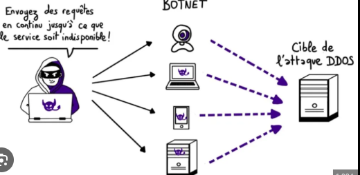

EXPLICATION D'UN CYBER INCIDENT
Le cyber incident dont il sera question ici est l'attaque par deni de service
QU'EST CE QU'UNE ATTAQUE PAR DENI DE SERVICE ?
Une attaque par déni de service distribué (DDoS) cible les sites web et les serveurs en perturbant les services réseau afin d’épuiser les ressources d’une application. Les auteurs de ces attaques inondent un site d’un trafic errant, ce qui entraîne une mauvaise fonctionnalité du site ou le met carrément hors ligne.Les secteurs les plus ciblés de cette attaque sont ceux de jeu ,de télécommunication et de commerce electronique.

- Types de systemes affectés
Le systeme d'information est un ensemble organisé de ressources qui permet de collecter, stocker, traiter et distribuer de l'information.
Le systeme d'information est l'element le plus essentiel d'une entreprise.Il designe donc la cible parfaite pour une attaque en vu de destabilisation du serveur.
Atteindre ce systeme reviendrai a temporairement inactiver l'entreprise car c'est a l'interieur que reside les secteurs de telecommunication.
Ainsi donc bloquer,tous les autres systemes seront affectés:
- systeme operant: représente la partie fonctionnelle, active, du système, celle qui agit en fonction de la finalité (le but poursuivi) et des décisions prises par le système
- systeme de pilotage: représente la partie fonctionnelle, active, du système, celle qui agit en fonction de la finalité (le but poursuivi) et des décisions prises par le système
COMPOSANTES INTERNES OU PERIPHERIQUES IMPLIQUÉS
Les composantes visés sont les processeurs. Pour bloquér l'activité de l'entreprise , les malfaiteurs tentront d'envahir le processeur des machines.En bref ,ils attaquent le serveur principale de l'entreprise.
Le serveur est celui qui donne accées aux peripheriques("imprimantes;disque dur...),au stockage en base de données,a la gestion d'authentification et du controle d'accées.
Un serveur est rarement manipulé, et le clavier et l'écran (s'il y en a) servent principalement à des travaux de maintenance, de réparation et de contrôle.

TYPES DE MENACES INFORMATIQUES IMPLIQUÉES
Les types de menaces informatiques impliquées sont:
- Violation de compte.
- Violation de droits.
- EXEMPLE D'ATTAQUE DE DENI DE SERVICE
- Octobre 2023 : Google atténue une attaque de 398 millions de R/S
En octobre 2023, Google a déclaré avoir atténué la plus grande attaque par déni de service distribué (DDoS) jamais enregistrée, une attaque HTTP/2 « Rapid Reset » dont le pic a atteint 398 millions de requêtes par seconde (R/S).
HTTP/2 Rapid Reset exploite une faille dans le protocole HTTP/2 qui lui permet de lancer des attaques DDoS. Le protocole HTTP/2 est essentiel à la manière dont les navigateurs interagissent avec les sites web : il permet aux navigateurs de demander du texte, des images et d'autres contenus à des sites. Dans le cadre d'une attaque HTTP/2 Rapid Reset, des acteurs malveillants transmettent un grand nombre de requêtes à un site, puis les annulent immédiatement. Ils répètent ce processus de requête et d'annulation, dans l'espoir de saturer le site web et de le mettre hors ligne.
- Août 2023 : entreprises du secteur du jeux et des jeux de hasard
En août 2023, Cloudflare a atténué des milliers d'attaques DDoS HTTP hyper-volumétriques, dont 89 dépassaient les 100 millions de r/s. L'attaque la plus massive a culminé à 201 millions de r/s, soit un chiffre trois fois plus élevé que celui de l'attaque la plus volumineuse jamais enregistrée jusqu'alors (71 millions de r/s, enregistrée en février 2023).
- Juin 2022 : client Google Cloud
Google a fait état d'un client Google Cloud qui avait été pris pour cible par une attaque DDoS HTTPS culminant à 46 millions de requêtes par seconde. L'attaque provenait de plus de 5 000 sources réparties dans plus de 130 pays.
- Septembre 2017 : Google Cloud
En 2017, une attaque visant les services Google Cloud a atteint un volume de 2,54 Tb/s. Google a révélé cette dernière en octobre 2020.
Les acteurs malveillants ont envoyé des paquets usurpés à 180 000 serveurs web, qui ont à leur tour répondu à Google. Cette attaque ne constituait toutefois pas un incident isolé. En effet, ses auteurs avaient lancé plusieurs attaques DDoS contre l'infrastructure de Google au cours des six mois précédents.